ERA V5 Session 5 — Diagrams
Open this file in a browser if README.md preview shows no images. Back to README
1. Capability flow (inventory → lanes → OPUS → pretrain)
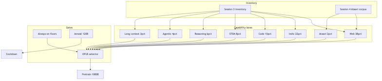
2. Reviewer journey
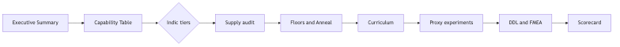
3. Decision validation pipeline
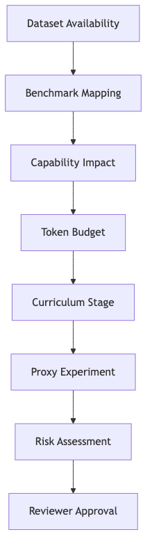
4. Capability allocation (1080B)
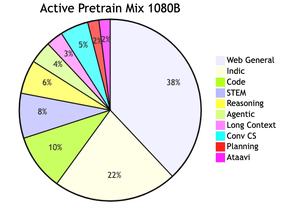
5. Indic four-tier split
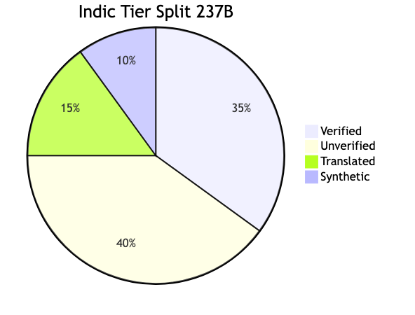
6. Curriculum timeline
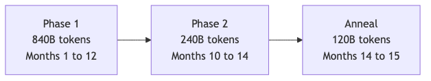
7. OPUS shard selector pipeline
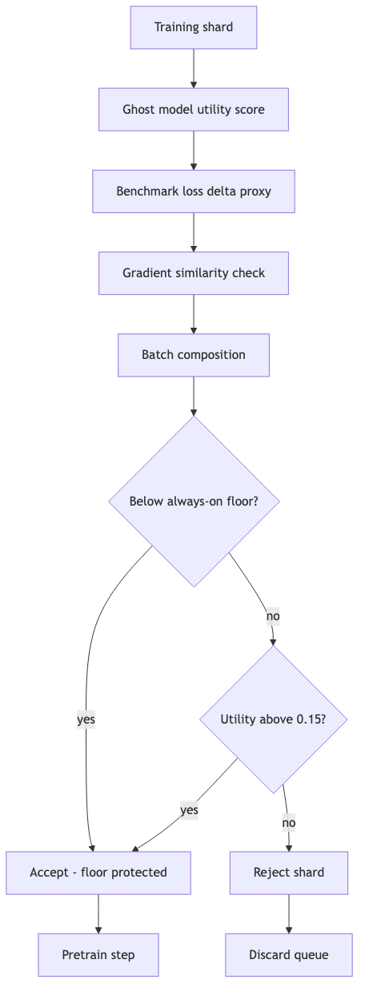
8. Trade-off constraints
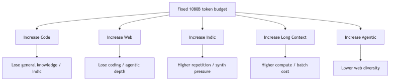
9. Capability evolution (maturity ladder)
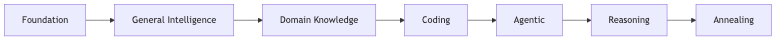
10. Benchmark → dataset flow
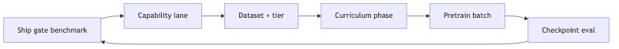
11. Risk tree (wrong decision mitigations)
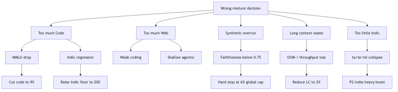